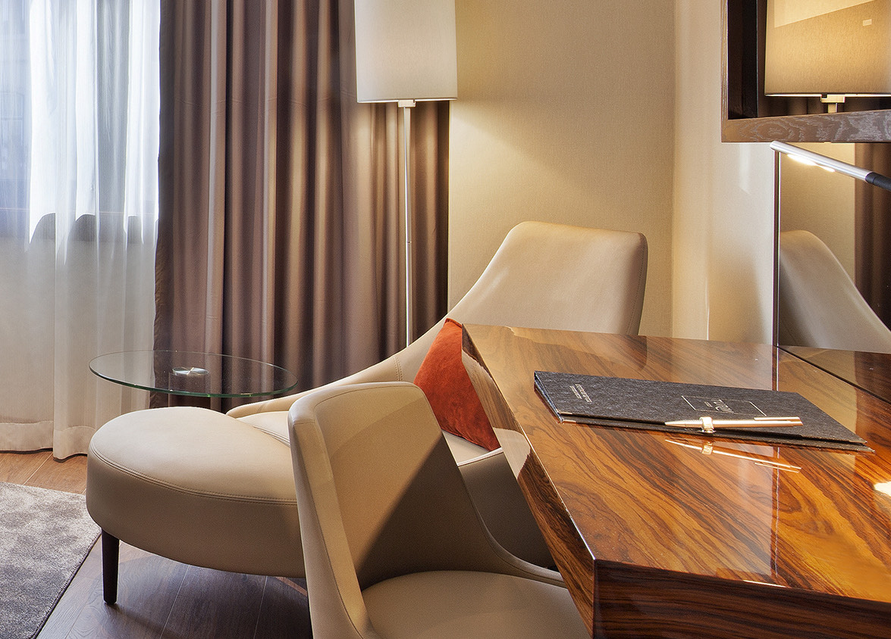
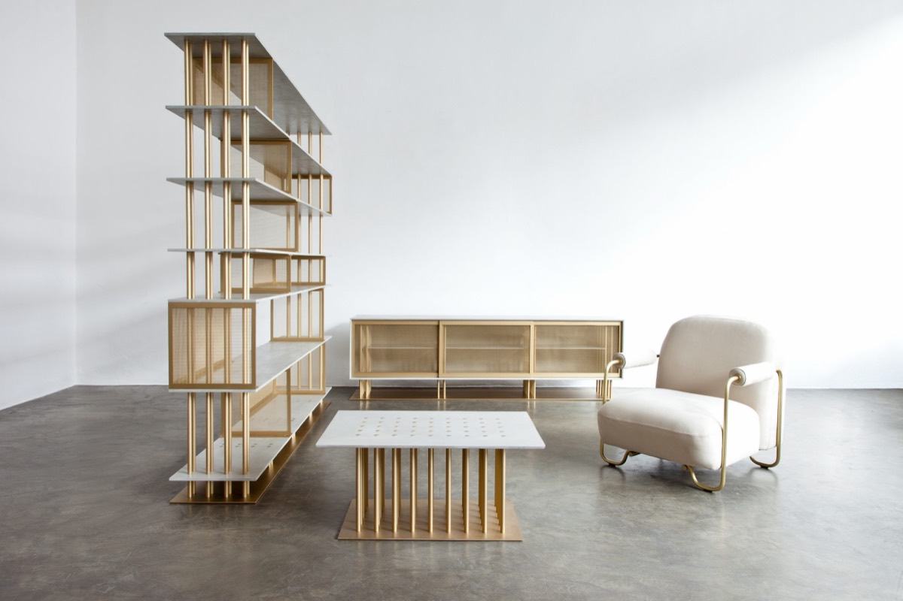
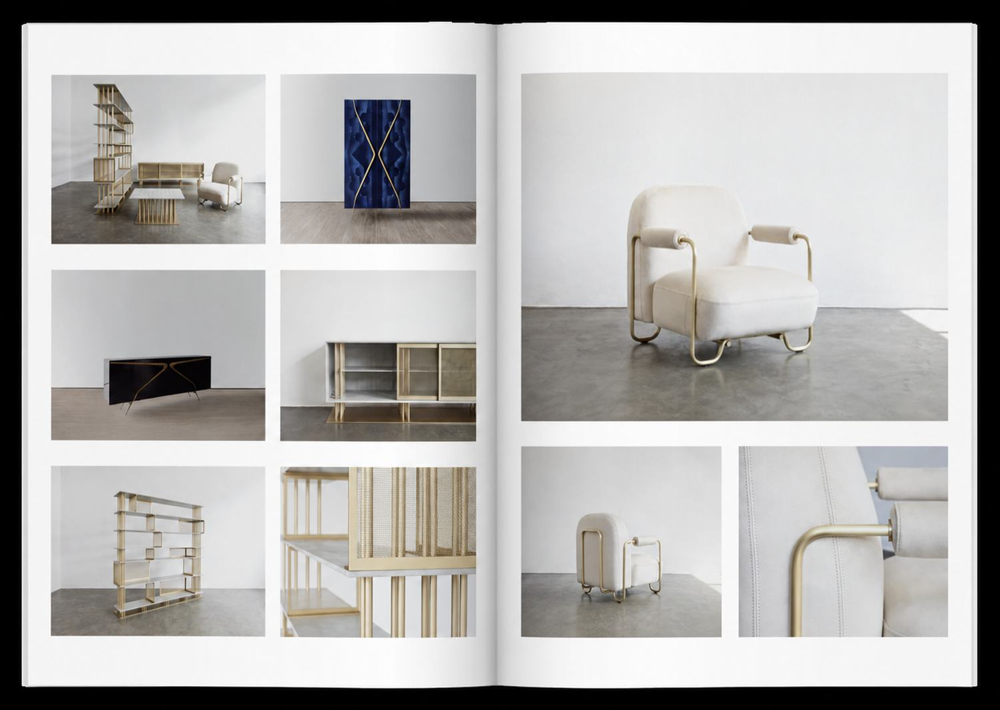

Bespoke
Exceptional pieces.
Made by our craftsmen and partner workshops around the world. No catalogue pieces: every project has its own materials, finishes and workshop.
An international presence
The right workshop, not just the available one.
Our international network, built over more than twenty years, lets us carry out the boldest projects in the workshops best placed to deliver them — fine cabinetmaking, metal, upholstery, glass or stone.
It is a choice, not a constraint: we send each piece to the workshop that truly masters its technique, not to the one with room in its schedule.

One-off pieces
Every project calls for its own materials and finishes.
Wood veneers and burls, patinated or polished brass, lacquers, velvets, saddle leathers, stone: the material is chosen for the piece, never the other way round.
